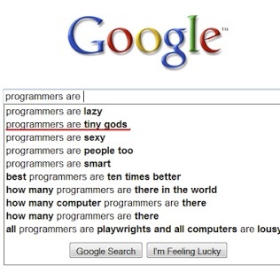

Understanding Padding, Border, and Margin (PBM):
First, look at that nifty box model on the right ☺ It shows the positions of Content, Padding, Border, and Margin.
Content - This is the where the text, image or video appears.
Padding - Clears an area around the content. The padding is affected by the background color of the box. So if you wanted to create a more color around the text you would increase the padding
Padding: 10px;
The code will create a space of 10 pixels around the content that will be the same color as the background color given to the content.
Border - A border that goes around the padding and content. You can change the border color, size, and line quality.
Border: 5px solid gray;
The code above means that around the padding a solid gray border will appear that is 5 pixels thick.
Margin - Clears an area around the border. The margin does not have a background color, it is completely transparent. So basically you would use this to create space so that if you have to pieces of content next to each other, they wouldn’t be touching.
margin: 10px;
The code creates a transparent margin of 10 pixels around the border.
*note that you don’t have to change the entire PBM, you can alter any of the sides. Look at this code
padding-top: 10px;
border-right: 15px solid black;
margin-bottom: 20px;
The code will make the padding on the top 10 pixels, there will be a border of 15 pixels on the right and a transparent margin of twenty pixels on the bottom. See the image below to see how the content box reacts to the chocobo!
One more Example, lets give the content box a width of 100px, a padding of 10px, a border of 5px solid gray, and a margin-top of 50px, just so it doesn't bother that chocobo! The code should look like this:
width: 100px;
padding: 10px;
border: 5px solid gray;
margin-top: 50px;
And this is the result:
The Box Model
Just for fun!